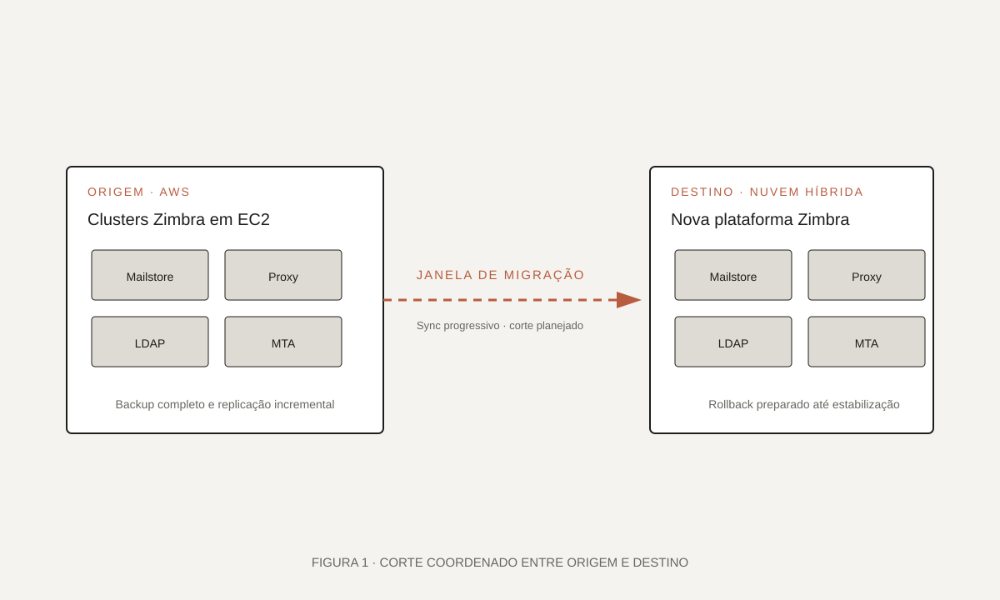

01 · Visão geral
Correio corporativo migrado com continuidade.
O projeto migrou clusters Zimbra de AWS para uma plataforma de nuvem híbrida. E-mail é um serviço com baixa tolerância a downtime — o plano precisava contemplar corte controlado e rollback.
[Contextualize aqui o cenário: quantas caixas, tipos de usuários e por que a migração fazia sentido — sem citar dados sensíveis.]
Custo, dependência de fornecedor e necessidade de consolidação.
Nova plataforma híbrida com replicação e corte coordenado.
Continuidade do serviço com nova base para evoluções seguintes.
02 · O desafio
Migrar e-mail é migrar reputação.
Além do dado, e-mail carrega reputação de IP, filtragem, chaves de assinatura e integrações. Uma janela mal planejada respinga em toda a empresa.
“Um corte de e-mail bem executado passa despercebido — esse era o objetivo.”
- Preservar caixas, filtros, contatos e regras.
- Sincronizar dados de forma incremental até o corte.
- Preparar rollback caso algum comportamento saísse do esperado.
- Coordenar corte de DNS, MX e reputação de IP.
03 · Meu papel
Da execução ao acompanhamento do corte.
Atuei diretamente na parte técnica: preparação da nova plataforma, sincronização progressiva e execução das janelas de corte. Também acompanhamos a estabilização pós-corte.
Preparação: instalação e ajuste do Zimbra na nova plataforma.
Migração: replicação incremental de mailstores e configurações.
Corte: execução da janela, alteração de DNS e monitoramento intensivo.
04 · Arquitetura
Duas plataformas coexistindo até o corte.
Origem em AWS e destino na nova plataforma coexistiram durante a janela de sincronização. O corte foi feito em blocos, com verificação a cada etapa.

assets/projetos/arquitetura-migracao-zimbra.svg.Componentes principais
Origem
Cluster Zimbra em AWS com mailstores, LDAP, MTA e proxies.
Destino
Nova plataforma híbrida com espelho da topologia e ajuste de capacidade.
Migração
Ferramentas de sync incremental e verificação de integridade.
Corte
Alteração de DNS/MX, monitoramento de fila e rollback preparado.
05 · Implementação
Cronograma disciplinado, janelas curtas.
Migramos em ondas, priorizando grupos com menor impacto e evoluindo até chegar nas caixas críticas. Cada onda tinha checklist de verificação e critérios de rollback.
- 1
Preparação
Deploy da nova plataforma, testes de envio/recepção e integração com IdP.
- 2
Sincronização
Cópia inicial completa e replicação incremental das caixas.
- 3
Janela de corte
Alteração de DNS, atualização de MX e verificação de fluxo real.
- 4
Estabilização
Monitoramento contínuo, ajuste fino e desativação gradual da origem.

06 · Decisões técnicas
Prever o pior, executar o simples.
As decisões priorizaram previsibilidade. Cada janela pequena carregava menos risco do que uma janela grande — mesmo custando mais horas totais.
07 · Resultados
Corte silencioso, operação evoluída.
O impacto visível para o usuário foi mínimo. Nos bastidores, a operação passou a rodar com melhor consolidação e uma base preparada para futuras evoluções.
Migração sem interrupções percebidas pelos usuários finais.
Infraestrutura padronizada na nova plataforma híbrida.
Base preparada para modernizações posteriores do stack de e-mail.
08 · Aprendizados
Migração é 20% técnica, 80% coordenação.
O maior fator de sucesso foi a comunicação com stakeholders e o rigor no checklist. Todo o resto era consequência.
- Ondas pequenas dão previsibilidade e reduzem risco.
- Rollback ensaiado é rollback confiável.
- Comunicação clara com stakeholders elimina metade dos problemas.